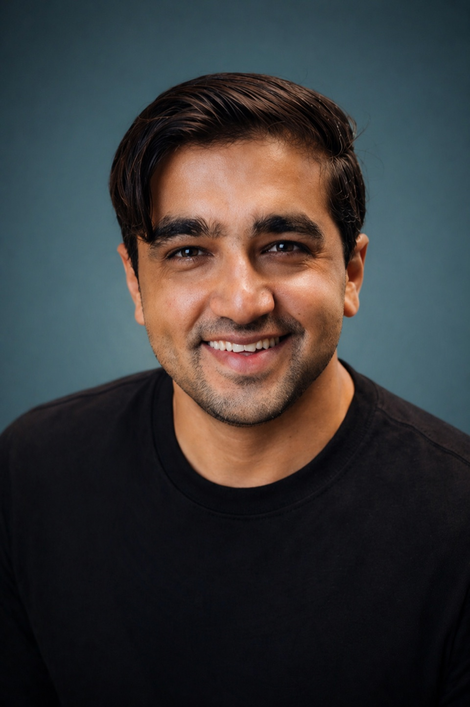
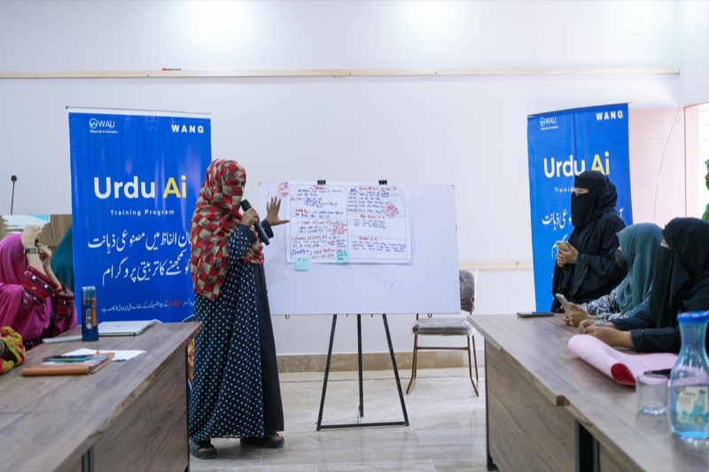

WANG's work is driven by a team committed to making technology and innovation
accessible for communities that need it most.
Leadership
Founder

Qaisar Roonjha
Founder of WANG (We Are New Generation). Qaisar began WANG’s public community work in 2012 and opened the WALI innovation lab in 2021 to
bridge the digital divide in rural Pakistan. He leads all six initiatives —
WALI, Urdu AI, PakSpeed, PakEducate, WIRE, and Darwaza -- from their shared
base in Ahmed Abad Wang, Bela, Lasbela, Balochistan.
Under his leadership, WANG has grown from a local community program into a
multi-initiative non-profit reaching 800K+ learners across Pakistan, supported
by Google.org, AVPN, and Internet Society.
Qaisar studied at Brandeis University’s Heller School for Social Policy and Management, combining policy training with
grassroots execution. His public recognition includes the Prime Minister’s Youth Excellence Award (2022), presented by PM Shahbaz Sharif
on International Youth Day in Islamabad, USAID Youth Activist of the Year, and selection as a
Rise Up Together Youth Champion (2019). See also
Awards & recognition.
Team structure
How the team works

WALI Lab Staff
The WALI lab in Lasbela is staffed by trainers, facilitators, and community
coordinators who deliver digital literacy camps, AI workshops, and youth programs
on a daily basis.
Urdu AI Dost Network
The national Dost facilitator network spans 29+ districts across Pakistan,
with 31 active Dosts delivering Urdu-language AI education in their communities.
WIRE Facilitators
Women facilitators in Balochistan deliver the mother-daughter innovation model,
training rural women in digital skills and enterprise development.
Technical Team
Product development, platform management, and technical infrastructure for
Urdu AI, PakSpeed, PakEducate, and Darwaza.
Join the team
WANG is always looking for dedicated people.
Whether you want to volunteer, join as staff, or become an Urdu AI Dost
facilitator, reach out to explore how you can contribute.